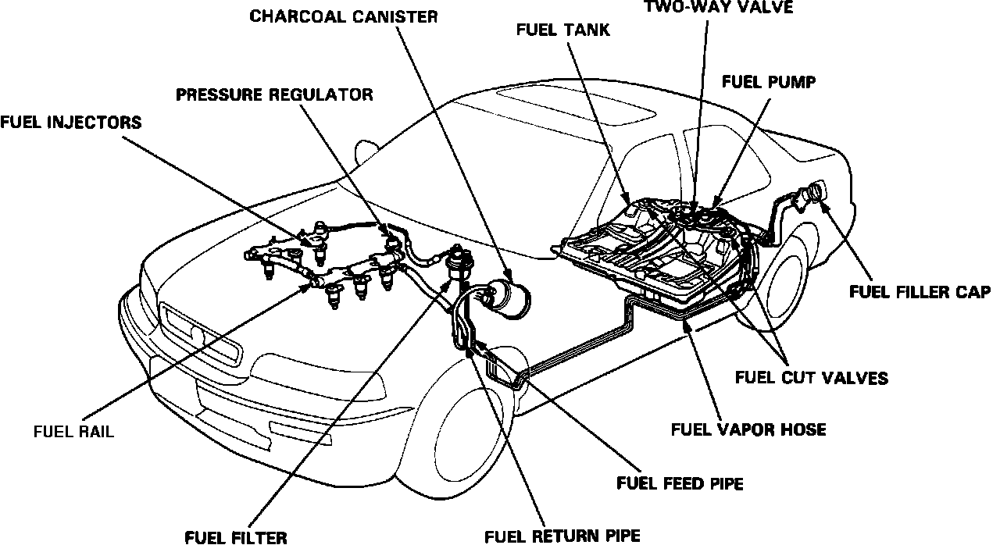

General System Description
Fuel Delivery System:

FUEL INJECTION
The PGM-FI (programmed fuel injection) system is an electronically controlled multi-point sequential fuel injection system. Injection quantity is determined by the length of time the injector is open. Injection duration is controlled by the ECU. The ECU contains a basic injection program which is modified by various input signals to achieve a precise injection duration. Refer to "Computers and Control Systems" for additional information regarding electronic controls.
Air Intake System:

AIR INTAKE SYSTEM
The intake air system controls engine idling, fast idle, low speed, and high speed operating demands. Engine idle is ECU controlled by the Electronic Air Control Valve which is covered in "Computers and Control Systems." The idle system uses an AIR BOOST VALVE to assist engine starting and a FAST IDLE valve to increase idle speed during warm-up. Low speed and high speed power is optimized by an INTAKE CHAMBER VOLUME CONTROL SYSTEM.
SYSTEM COMPONENTS
Components related to fuel delivery and the air intake system are:
^ Accelerator pedal
^ Air boost valve
^ Air cleaner
^ Air intake duct
^ Fuel cut-off valves (2)
^ Fuel filter
^ Fuel injectors
^ Fuel pressure regulator
^ Fuel pump
^ Fuel pump relay
^ Fuel rail
^ Fuel lines
^ Fuel tank
^ Idle compensator (fast idle valve)
^ Injector resistor
^ Intake chamber volume control system
^ Throttle body
^ Throttle cable
For information regarding electrical or electronic controls, refer to Computers and Control Systems.